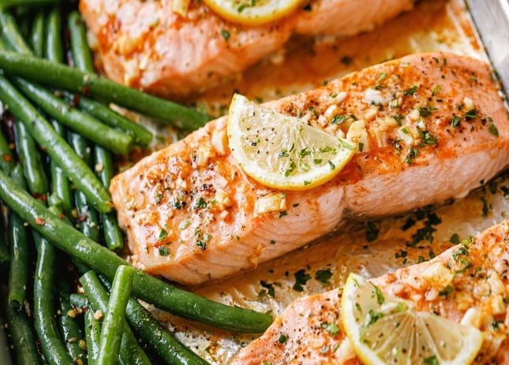

Garlic Salmon

Description
Tender, flaky, and packed with flavour, this baked salmon recipe is going to be a hit with your family. It’s a hands-off recipe that only takes a couple of minutes to throw together and is a delicious healthy dinner option.
Even better, this baked salmon recipe is gluten-free, keto-friendly, and low-carb. Enjoy it on its own or add it to a salad like this Easy Salmon Salad Recipe.
Baked Salmon is a delicious fish recipe. When you use garlic butter and lemon to create the sauce, it gives this baked salmon recipe even depth of flavor.
We’ll show you how to make this salmon recipe easy for clean up by wrapping the fish fillets in foil packs and baking them in the oven!
Ingredients
- 1 1/4 pounds salmon fillet
- 2 tablespoons lemon juice
- 2 cloves garlic minced
- 3 tablespoons melted butter or melted ghee
- 1/2 teaspoon salt
- 1/4 teaspoon black pepper
- 1/4 teaspoon dried oregano
- 1/4 teaspoon crushed red pepper
- 1 tablespoon chopped parsley to garnish
- lemon slices to garlish
Directions
- Preheat oven to 400ºF. Line a baking sheet. The piece of foil should be large enough to fold over and seal the fish.
- In a small bowl, add lemon juice, garlic, and melted butter or melted ghee. Whisk everything together.
- Place the salmon on the prepared baking sheet. Pour the butter mixture over the salmon
- Season with salt, pepper, oregano, and red pepper flakes.
- Fold the sides of the foil over the salmon. Make sure it is well sealed so that the sauce does not leak. Place the pan into the oven, and bake until cooked, about 12-16 minutes. The cooking time depends on the thickness of the fillet.
- Open the foil, and broil the fish for 2-3 minutes. Be careful not to burn the fish!
- Remove from the oven. Using a spoon, pour some of the butter sauce left in the foil onto the salmon before serving. Then, garnish with fresh chopped parsley and lemon slices.